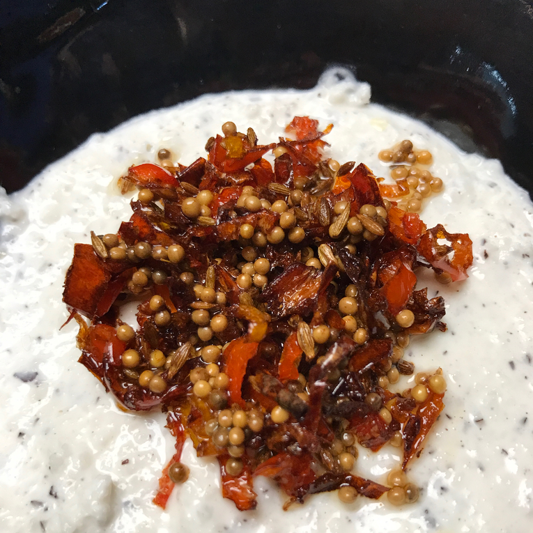

Coconut Chutney

Description
Indian coconut chutney to be served with dosa and idli (steamed rice and lentil cakes).
Ingredients
- ½ fresh whole coconut, drained and grated
- ½ cup plain yogurt
- 1 tablespoon vegetable oil
- 3 fresh red chili peppers, chopped
- ½ teaspoon mustard seed
- ¼ teaspoon cumin seeds
Directions
- Place the coconut and yogurt in a blender or food processor. Process to a paste-like consistency. Transfer to a medium bowl.
- Heat the oil in a medium saucepan over medium heat. Stir in chili peppers, mustard seed, and cumin seeds. Cook until mustard seeds start to pop. Spoon over the coconut mixture. Cover, and refrigerate until serving.